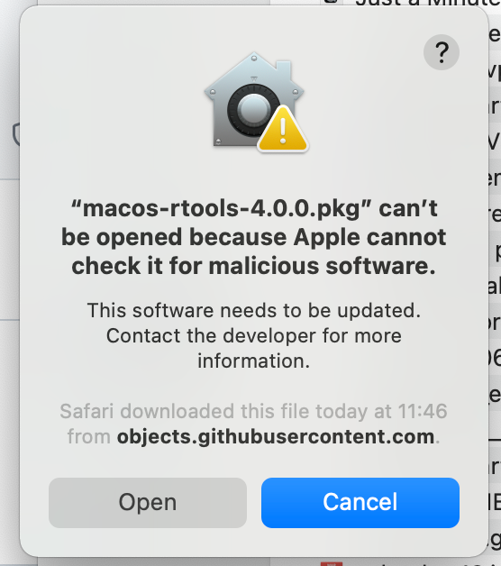
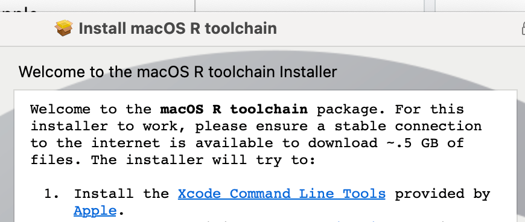

Doing this on a M1 Macbook Pro running macOS Big Sur 11.6.4. R 4.0.3 platform x86_64-apple-darwin17.0 which I think means that R is running in Rosetta emulation. RStudio Pre-Release Build 2022-02-00.
Xcode was already installed but did some updating and installation of extra components when I launched it. Current version was Version 13.2.1 (13C100).
Using instructions from https://github.com/stan-dev/rstan/wiki/RStan-Getting-Started
This page has a toolchain configuration utility which I used. Downloaded from https://github.com/rmacoslib/r-macos-rtools/releases/tag/v4.0.0 and then launched and ran like a normal installer.
It gave this rather alarming warning:

Clicking ‘Open’ worked fine but the installer seems to assume you don’t already have Xcode installed so it wants to download lots of files - which isn’t ideal when you’re in the back of car driving round Kings Lynn. So I chickened out.
